import sys
sys.version
'3.10.18 (main, Jun 4 2025, 04:04:42) [GCC 13.3.0]'
A Layered Grammar of Graphics#
Code examples of R’s ggplot functions adapted to Python’s plotnine library.
import numpy as np
import pandas as pd
from plotnine import *
import seaborn as sns
diamonds = sns.load_dataset("diamonds")
---------------------------------------------------------------------------
ModuleNotFoundError Traceback (most recent call last)
Cell In[2], line 3
1 import numpy as np
2 import pandas as pd
----> 3 from plotnine import *
5 import seaborn as sns
6 diamonds = sns.load_dataset("diamonds")
ModuleNotFoundError: No module named 'plotnine'
diamonds.describe()
diamonds.value_counts()
carat cut color clarity depth table price x y z
0.79 Ideal G SI1 62.3 57.0 2898 5.90 5.85 3.66 5
1.50 Good I VS1 57.2 62.0 9702 7.64 7.61 4.36 2
0.30 Good J VS1 63.4 57.0 394 4.23 4.26 2.69 2
1.50 Fair H SI1 65.0 57.0 6838 7.10 7.06 4.60 2
0.30 Ideal H SI1 62.2 57.0 450 4.27 4.28 2.66 2
..
1.00 Very Good I SI1 63.3 54.0 3640 6.39 6.34 4.03 1
63.2 56.0 4088 6.37 6.31 4.01 1
63.1 58.0 4149 6.30 6.35 3.99 1
63.0 58.0 4125 6.30 6.33 3.98 1
0.20 Ideal D VS2 61.5 57.0 367 3.81 3.77 2.33 1
Length: 53794, dtype: int64
## plotting functions
# import math
# df = pd.DataFrame({'x':np.arange(0.1,10,0.1)})
# ggplot(df, aes(x='x')) + \
# stat_function(fun=lambda x: math.log(x))
# Examples of legends from four different scales. From left to right:
# continuous variable mapped to size and colour, discrete variable
# mapped to shape and colour. The legend automatically responds to the
# the geoms used in the plot, from left to right: points, tiles,
# points, points \& lines.
# df <- data.frame(a = letters[1:5], b = seq(2, 10, 2))
df = pd.DataFrame(
{
'x': range(0,5),
'y': range(0,5),
'a':['A','B','C','D','E'],
'b':range(2,12,2)}
)
df
| x | y | a | b | |
|---|---|---|---|---|
| 0 | 0 | 0 | A | 2 |
| 1 | 1 | 1 | B | 4 |
| 2 | 2 | 2 | C | 6 |
| 3 | 3 | 3 | D | 8 |
| 4 | 4 | 4 | E | 10 |
# p <- qplot(1:5, 1:5, data=df) + opts(keep = "legend_box")
p = qplot(data=df, x='x', y='y')
p
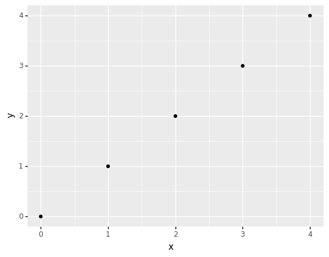
<ggplot: (340510710)>
# p + aes(size = b) + scale_size("")
p + aes(size = "b") + scale_size()
# equiv
# ggplot(aes(x='x', y='y', size = "b"), data=df) + geom_point() + scale_size()
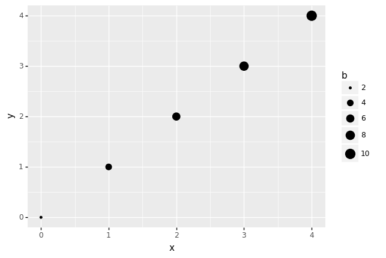
<ggplot: (340516430)>
# p + aes(fill = b) + geom_tile() +
# scale_fill_gradient("", low="red", high="blue")
p + aes(fill = "b") + geom_tile() + \
scale_fill_gradient(low="red", high="blue")
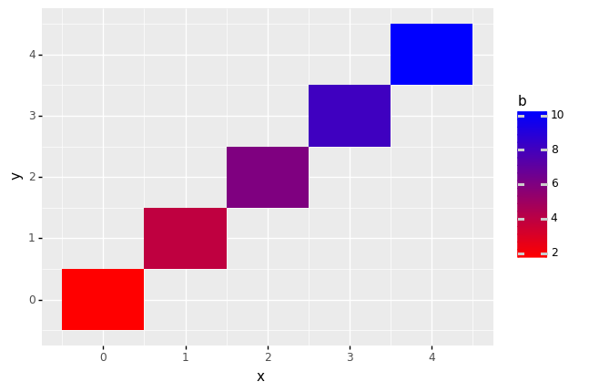
<ggplot: (339217072)>
# p + aes(shape = a) + scale_shape("")
p + aes(shape = "a") + scale_shape()
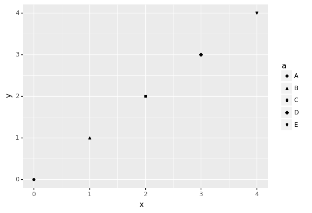
<ggplot: (339983445)>
# p + aes(colour = a) + geom_line() + scale_colour_hue("")
p + aes(colour = "a") + geom_line() + scale_colour_hue()
/Users/ivan/Projects/Minireference/STATSbook/Code/venv/lib/python3.6/site-packages/plotnine/geoms/geom_path.py:83: PlotnineWarning: geom_path: Each group consist of only one observation. Do you need to adjust the group aesthetic?
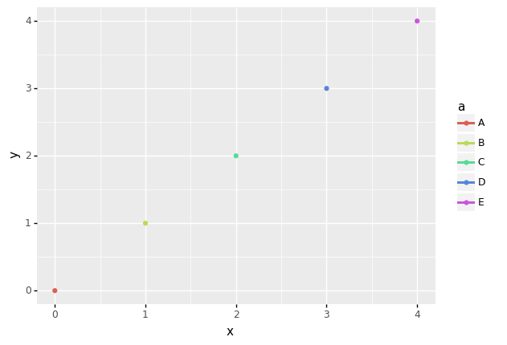
<ggplot: (-9223372036515709461)>
aa
Part II#
Examples of axes and grid lines for three coordinate systems: Cartesian, semi-log and polar. The polar coordinate system illustrates the difficulties associated with non-Cartesian coordinates: it is hard to draw the axes well.
x1 = range(1, 11)
y1 = range(1, 11)
p = qplot(x1, y1, geom="blank", xlab=None, ylab=None) + theme_bw()
p # linear scale for y-axis
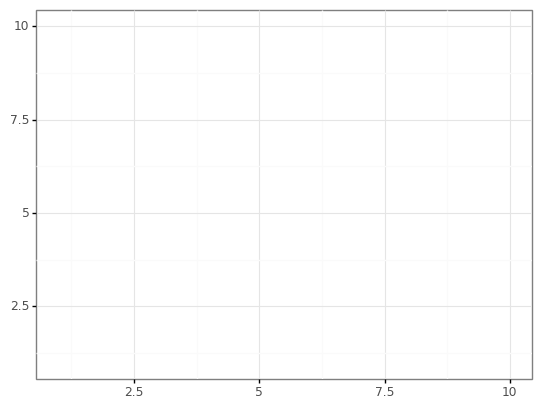
<ggplot: (-9223372036511699438)>
p + coord_trans(y="log10") # log-scale y-axis
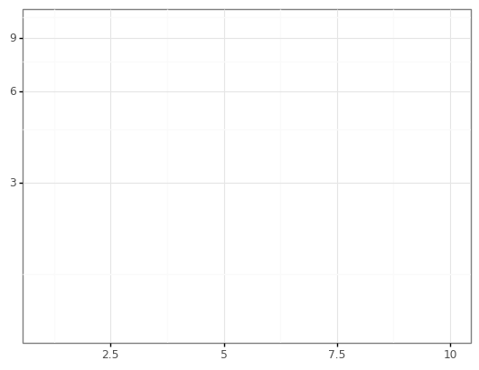
<ggplot: (343078299)>
# p + coord_polar()
# polar-coordinates are not available in plotnine yet
# https://github.com/has2k1/plotnine/issues/10
PART III#
(Left) Scatterplot of price vs carat. (Right) scatterplot of price vs carat, with log-transformed scales, and a linear smooth layered on top.
# dsmall <- diamonds[sample(nrow(diamonds),1000), ]
diamondsk = diamonds.sample(n=1000)
qplot('carat', 'price', data = diamondsk)
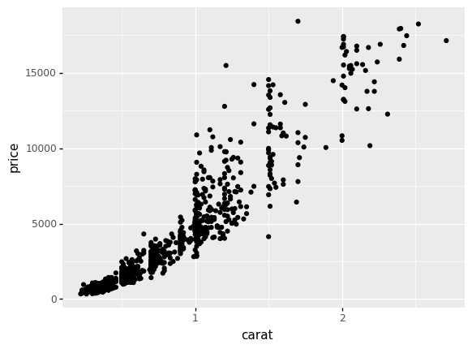
<ggplot: (340383275)>
qplot('carat', 'price', data = diamondsk, log="xy") + \
geom_smooth(method = "lm")
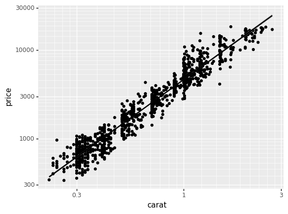
<ggplot: (338777741)>
# Two histograms of diamond price produced by the histogram geom.
# (Left) Default bin width, 30 bins. (Right) Custom \$50 bin width
# reveals missing data.
# qplot('price', data=diamonds, geom="histogram") # BAD
# qplot('price', data=diamonds, geom="histogram", binwidth=50) # WORSE
qplot('price', data=diamonds, geom="histogram", binwidth=500) # OK
# Variations on the histogram. Using a ribbon (left) to produce a
# frequency polygon, or points (right) to produce an unnamed graphic.
# qplot('price', data=diamonds, stat="bin", geom="point", binwidth = 1000)
# qplot('price', data=diamonds, stat="bin", geom="area", binwidth = 1000)
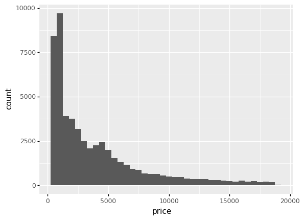
<ggplot: (339244962)>
qplot("clarity", data=diamonds, geom="blank", fill="clarity") + \
scale_fill_brewer(palette="YlGnBu") + \
aes(x = "factor(clarity)") + \
scale_x_discrete(labels = "") + \
geom_bar(width = 1)
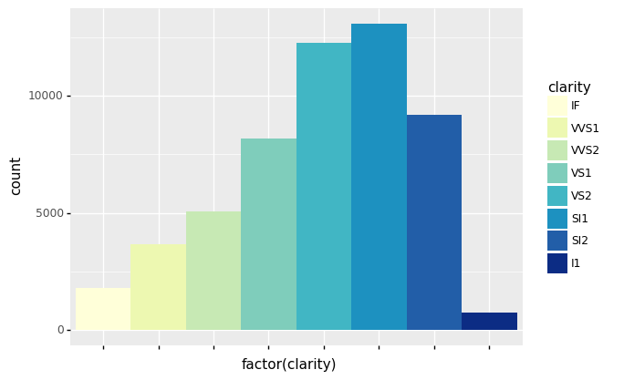
<ggplot: (-9223372036513919614)>
Transformations of data vs. scale#
# Transforming the data (left) vs transforming the scale (right). From
# a distance the plots look identical. Close inspection is required to
# see that the scales and minor grid lines are different. Transforming
# the scale is to be preferred as the axes are labelled according to
# the original data, and so are easier to interpret. The presentation
# of the labels still requires work.
lmfit = geom_smooth(method = "lm", se = False)
qplot("np.log10(carat)", "np.log10(price)", data = diamondsk, color="price") + lmfit
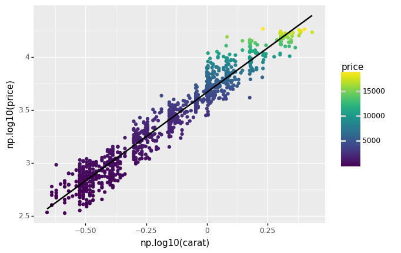
<ggplot: (340957921)>
qplot("carat", "price", data = diamondsk, log="xy", color="price") + lmfit
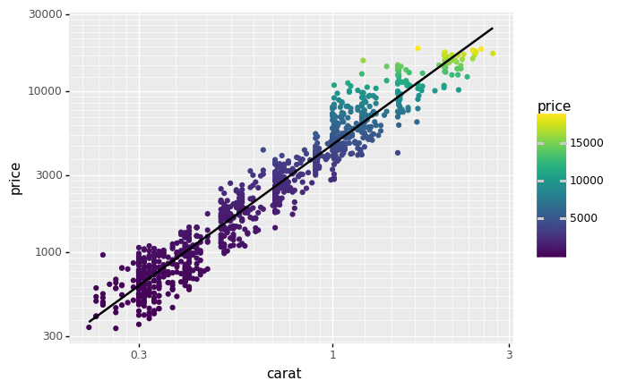
<ggplot: (341081057)>
# diamondsk['price'] = diamondsk['price'].astype('float')
diamondsk.dropna(inplace=True)
# Transforming the coordinate system
# Coordinate system transformations are the final step in
# drawing the graphic, and affect the shape of geometric objects. Here
# a straight line becomes a curve, and demonstrates why fitting a
# linear model to the untranformed data is such a bad idea.
# qplot("carat", "price", data = diamondsk) + lmfit + coord_trans(y="log10", y="log10")
qplot("carat", "price", data = diamondsk) + \
coord_trans(x="log10", y="log10") + ylim(300,18692)
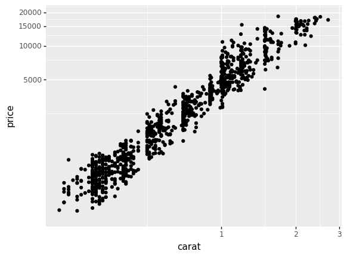
<ggplot: (343453160)>
# Minimal example of coord_trans(y="log10") bug
# # same as above but with LM's se turned off
# ggplot(df, aes(x="x", y="y")) + \
# geom_point() + \
# coord_trans(x="log10", y="log10") + \
# geom_smooth(method="lm", se=False)
# Linear model fit to raw data (left)
qplot("carat", "price", data = diamondsk) + lmfit
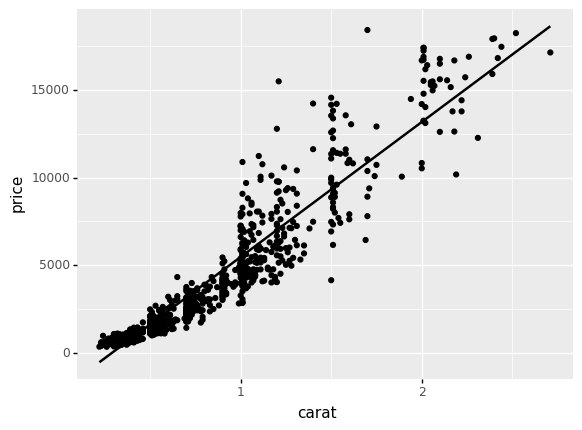
<ggplot: (-9223372036510328846)>
# # linear model fit to logged data, then back-transformed to original scale (right).
# from mizani.transforms import exp_trans
# exp10 = exp_trans(10)
# qplot("carat", "price", data = diamondsk, log="xy") + lmfit + \
# coord_trans(x=exp10, y = exp10)